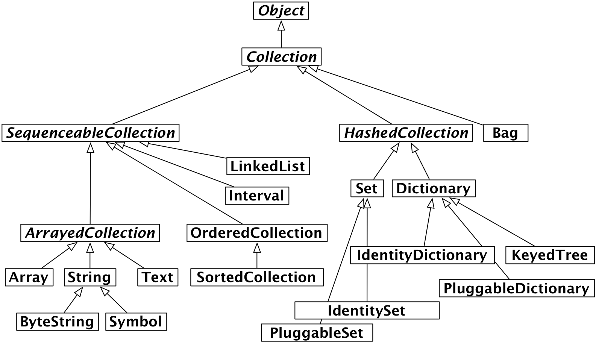
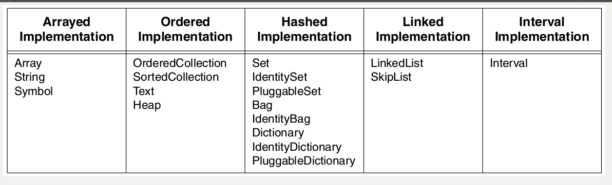

14 Collections
To make good use of the collection classes, the reader needs at least a superficial knowledge of the wide variety of collections that exist, and their commonalities and differences. This is what this chapter is about.
The collection classes form a loosely-defined group of general-purpose subclasses of Collection and Stream. Some of these subclasses such as Bitmap, or CompiledMethod are special-purpose classes crafted for use in other parts of the system or in applications, and hence not categorized as Collections by the system organization.
In this chapter, we use the term Collection Hierarchy to mean Collection and its subclasses that are also in the packages labelled Collections-*. We use the term Stream Hierarchy to mean Stream and its subclasses that are also in the Collections-Streams packages.
In this chapter we focus mainly on the subset of collection classes shown in Figure 14.1. Streams will be discussed separately in Chapter 15.
Pharo by default provide a good set of collections. In addition, the project "Containers" available at http://www.github.com/Pharo-Containers/ proposes alternate implementations or new collections and data structures.

Let us start with an important point about the design of the collections in Pharo. Their APIs heavily use high-order functions: so while we can use for loops like in old Java, most of the time Pharo developers will use iterator style based on high-order functions.
14.1 High-order functions
Programming with collections using high-order functions rather than individual elements is an important way to raise the level of abstraction of a program. The Lisp function map, which applies an argument function to every element of a list and returns a new list containing the results is an early example of this style. Following its Smalltalk root, Pharo adopts this collection-based high-order programming as a central tenet. Modern functional programming languages such as ML and Haskell have followed Smalltalk's lead.
Why is this a good idea? Let us suppose you have a data structure containing a collection of student records, and wish to perform some action on all of the students that meet some criteria. Programmers raised to use an imperative language will immediately reach for a loop, but the Pharo programmer will write:
students
select: [ :each | each gpa < threshold ]This expression returns a new collection containing precisely those elements of students for which the block (the bracketed function) returns true. The block can be thought of as a lambda-expression defining an anonymous function x. x gpa < threshold. This code has the simplicity and elegance of a
domain-specific query language.
The message select: is understood by all collections in Pharo. There is no need to find out if the student data structure is an array or a linked list: the select: message is understood by both. Note that this it's quite different from using a loop, where one must know whether students is an array or a linked list before the loop can be set up.
In Pharo, when one speaks of a collection without being more specific about the kind of collection, one means an object that supports well-defined protocols for testing membership and enumerating the elements. All collections understand the testing messages includes:, isEmpty and occurrencesOf:. All collections understand the enumeration messages do:, select:, reject: (which is the opposite of select:), collect: (which is like Lisp's map), detect:ifNone:, inject:into: (which performs a left fold) and many more. It is the ubiquity
of this protocol, as well as its variety, that makes it so powerful.
The table below summarizes the standard protocols supported by most of the classes in the collection hierarchy. These methods are defined, redefined, optimized or occasionally even forbidden by subclasses of Collection.
| Protocol | Methods | |
|---|---|---|
accessing | size, capacity, at:, at:put: | |
testing | isEmpty, includes:, contains:, occurrencesOf: | |
adding | add:, addAll: | |
removing | remove:, remove:ifAbsent:, removeAll: | |
enumerating | do:, collect:, select:, reject: | |
detect:, detect:ifNone:, inject:into: | ||
converting | asBag, asSet, asOrderedCollection, asSortedCollection, | |
asArray, asSortedCollection: | ||
creation | with:, with:with:, with:with:with:, | |
with:with:with:with:, withAll: |
14.2 The varieties of collections
Beyond this basic uniformity, there are many different kinds of collections either supporting different protocols or providing different behaviour for the same requests. Let us briefly observe some of the key differences:
Sequenceable:
Instances of all subclasses of SequenceableCollection start from a first element and proceed in a well-defined order to a last element. Instances of Set, Bag and Dictionary, on the other hand, are not sequenceable.
Sortable:
A SortedCollection maintains its elements in sort order.
Indexable:
Most sequenceable collections are also indexable, that is, elements can be retrieved with message at: anIndex. Array is the familiar indexable data structure with a fixed size; anArray at: n retrieves the nth element of anArray, and anArray at: n put: v changes the nth element to v. LinkedLists is sequenceable but not indexable, that is, they understand first and last, but not the message at:.
Keyed:
Instances of Dictionary and its subclasses are accessed by keys instead of indices.
Mutable:
Most collections are mutable, but Intervals and Symbols are not. An Interval is an immutable collection representing a range of Integers. For example, 5 to: 16 by: 2 is an interval that contains the elements 5, 7, 9, 11, 13 and 15. It is indexable with message at: anIndex, but cannot be changed with message at: anIndex put: aValue.
Growable:
Instances of Interval and Array are always of a fixed size. Other kinds of collections (sorted collections, ordered collections, and linked lists) can grow after creation. The class OrderedCollection is more general than Array; the size of an OrderedCollection grows on demand, and it defines messages addFirst: anElement and addLast: anElement as well as messages at: anIndex and at: anIndex put: aValue.
Accepts duplicates:
A Set filters out duplicates, but a Bag does not. Classes Dictionary, Set and Bag use the = method provided by the elements; the Identity variants of these classes use the == method, which tests whether the arguments are the same object, and the Pluggable variants use an arbitrary equivalence relation supplied by the creator of the collection.
Heterogeneous:
Most collections will hold any kind of element. A String, CharacterArray or Symbol, however, only holds Characters. An Array will hold any mix of objects, but a ByteArray only holds Bytes. A LinkedList is constrained to hold elements that conform to the Link accessing protocol.
14.3 Collection implementations

These categorizations by functionality are not our only concern; we must also consider how the collection classes are implemented. As shown in Figure 14.2, five main implementation techniques are employed.
- Arrays store their elements in the (indexable) instance variables of the collection object itself; as a consequence, arrays must be of a fixed size, but can be created with a single memory allocation.
OrderedCollectionsandSortedCollectionsstore their elements in an array that is referenced by one of the instance variables of the collection. Consequently, the internal array can be replaced with a larger one if the collection grows beyond its storage capacity.- The various kinds of set and dictionary also reference a subsidiary array for storage, but use the array as a hash table. Bags use a subsidiary
Dictionary, with the elements of the bag as keys and the number of occurrences as values. - LinkedLists use a standard singly-linked representation.
- Intervals are represented by three integers that record the two endpoints and the step size.
In addition to these classes, there are also weak variants of Array, Set and of the various kinds of dictionary. These collections hold onto their elements weakly, i.e., in a way that does not prevent the elements from being garbage collected. The Pharo virtual machine is aware of these classes and handles them specially.
14.4 Examples of key classes
We present now the most common or important collection classes using simple code examples. The main protocols of collections are:
- messages
at:,at:put:— to access an element, - messages
add:,remove:— to add or remove an element, - messages
size,isEmpty,include:— to get some information about the collection, - messages
do:,collect:,select:— to iterate over the collection.
Each collection may implement (or not) such protocols, and when they do, they interpret them to fit with their semantics. We suggest you to browse the classes themselves in order to identify specific and more advanced protocols.
We will focus on the most common collection classes: OrderedCollection, Set, SortedCollection, Dictionary, Interval, and Array.
14.5 Common creation protocol
There are several ways to create instances of collections. The most generic ones
use the message new: aSize and with: anElement.
new: anIntegercreates a collection of sizeanIntegerwhose elements will all benil.with:anObjectcreates a collection and addsanObjectto the created collection.
Different collections will realize this behaviour differently.
You can create collections with initial elements using the methods with:, with:with: etc. for up to six elements.
Array with: 1
>>> #(1)Array with: 1 with: 2
>>> #(1 2)Array with: 1 with: 2 with: 3
>>> #(1 2 3)Array with: 1 with: 2 with: 3 with: 4
>>> #(1 2 3 4)Array with: 1 with: 2 with: 3 with: 4 with: 5
>>> #(1 2 3 4 5)Array with: 1 with: 2 with: 3 with: 4 with: 5 with: 6
>>> #(1 2 3 4 5 6)You can also use message addAll: aCollection to add all elements of one kind
of collection to another kind:
(1 to: 5) asOrderedCollection addAll: '678'; yourself
>>> an OrderedCollection(1 2 3 4 5 6 7 8)Take care that addAll: returns its argument, and not the receiver!
You can also create many collections with withAll: aCollection.
Array withAll: #(7 3 1 3)
>>> #(7 3 1 3)OrderedCollection withAll: #(7 3 1 3)
>>> an OrderedCollection(7 3 1 3)SortedCollection withAll: #(7 3 1 3)
>>> a SortedCollection(1 3 3 7)Set withAll: #(7 3 1 3)
>>> a Set(7 1 3)Bag withAll: #(7 3 1 3)
>>> a Bag(7 1 3 3)14.6 Array
An Array is a fixed-sized collection of elements accessed by integer indices. Contrary to the C convention in Pharo, the first element of an array is at position 1 and not 0. The main protocol to access array elements is the method at: and at:put:.
at: anIntegerreturns the element at indexanInteger.at: anInteger put: anObjectputsanObjectat indexanInteger.
Arrays are fixed-size collections therefore we cannot add or remove elements at the end of an array. The following code creates an array of size 5, puts values in the first 3 locations and returns the first element.
| anArray |
anArray := Array new: 5.
anArray at: 1 put: 4.
anArray at: 2 put: 3/2.
anArray at: 3 put: 'ssss'.
anArray at: 1
>>> 4There are several ways to create instances of the class Array.
We can use
new:,with:,#( )construct - literal arrays and{ . }dynamic compact syntax.
Creation with new:
The message new: anInteger creates an array of size anInteger. Array
new: 5 creates an array of size 5.
The value of each element is initialized to nil.
Creation using with:
The with:* messages allow one to specify the value of the elements. The following code creates an array of three elements consisting of the number 4, the fraction 3/2 and the string 'lulu'.
Array with: 4 with: 3/2 with: 'lulu'
>>> {4. (3/2). 'lulu'}Literal creation with #()
The expression #() creates literal arrays with constants or literal elements that have to be known when the expression is compiled, and not when it is executed. The following code creates an array of size 2 where the first element is the (literal) number 1 and the second the (literal) string 'here'.
#(1 'here') size
>>> 2Now, if you execute the expression #(1+2), you do not get an array with a single element 3 but instead you get the array #(1 #+ 2) i.e., with three elements: 1, the symbol #+ and the number 2.
#(1+2)
>>> #(1 #+ 2)This occurs because the construct #() does not execute the expressions it contains. The elements are only objects that are created when parsing the expression (called literal objects). The expression is scanned and the resulting elements are fed to a new array. Literal arrays contain numbers, nil,
true, false, symbols, strings and other literal arrays. During the execution of #() expressions, there are no messages sent.
Dynamic creation with { . }
Finally, you can create a dynamic array using the construct { . }. The expression { a . b } is totally equivalent to Array with: a with: b. This means in particular that the expressions enclosed by { and } are executed (contrary to the case of #()).
{ 1 + 2 }
>>> #(3){(1/2) asFloat} at: 1
>>> 0.5{10 atRandom. 1/3} at: 2
>>> (1/3)Element Access
Elements of all sequenceable collections can be accessed with messages at: anIndex and at: anIndex put: anObject.
| anArray |
anArray := #(1 2 3 4 5 6) copy.
anArray at: 3 >>> 3
anArray at: 3 put: 33.
anArray at: 3
>>> 33Be careful: general principle is that literal arrays are not be modified! Literal arrays are kept in compiled method literal frames (a space where literals appearing in a method are stored), therefore unless you copy the array, the second time you execute the code your literal array may not have the value you expect. In the example, without copying the array, the second time around, the literal #(1 2 3 4 5 6) will actually be #(1 2 33 4 5 6)! Dynamic arrays do not have this problem because they are not stored in literal frames.
14.7 OrderedCollection
OrderedCollection is one of the collections that can grow, and to which elements can be added sequentially. It offers a variety of messages such as add:, addFirst:, addLast:, and addAll:.
| ordCol |
ordCol := OrderedCollection new.
ordCol add: 'Seaside'; add: 'SmalltalkHub'; addFirst: 'GitHub'.
ordCol
>>> an OrderedCollection('GitHub' 'Seaside' 'SmalltalkHub')Removing Elements
The message remove: anObject removes the first occurrence of an object from the collection. If the collection does not include such an object, it raises an error.
ordCol add: 'GitHub'.
ordCol remove: 'GitHub'.
ordCol
>>> an OrderedCollection('Seaside' 'SmalltalkHub' 'GitHub')There is a variant of remove: named remove:ifAbsent: that allows one to specify as second argument a block that is executed in case the element to be removed is not in the collection.
result := ordCol remove: 'zork' ifAbsent: [33].
result
>>> 33Conversion
It is possible to get an OrderedCollection from an Array (or any other collection) by sending the message asOrderedCollection:
#(1 2 3) asOrderedCollection
>>> an OrderedCollection(1 2 3)'hello' asOrderedCollection
>>> an OrderedCollection($h $e $l $l $o)14.8 Interval
The class Interval represents ranges of numbers. For example, the interval of numbers from 1 to 100 is defined as follows:
Interval from: 1 to: 100
>>> (1 to: 100)The result of printString reveals that the class Number provides us with a convenience method called to: to generate intervals:
(Interval from: 1 to: 100) = (1 to: 100)
>>> trueWe can use Interval class>>from:to:by: or Number>>to:by: to specify the step between two numbers as follow:
(Interval from: 1 to: 100 by: 0.5) size
>>> 199(1 to: 100 by: 0.5) at: 198
>>> 99.5(1/2 to: 54/7 by: 1/3) last
>>> (15/2)14.9 Dictionary
Dictionaries are important collections whose elements are accessed using keys. Among the most commonly used messages of dictionary you will find at: aKey, at: aKey put: aValue, at: aKey ifAbsent: aBlock, keys, and values.
| colors |
colors := Dictionary new.
colors at: #yellow put: Color yellow.
colors at: #blue put: Color blue.
colors at: #red put: Color red.
colors at: #yellow
>>> Color yellowcolors keys
>>> #(#red #blue #yellow)colors values
>>> {Color red . Color blue . Color yellow}Dictionaries compare keys by equality. Two keys are considered to be the same if they return true when compared using =. A common and difficult to spot bug is to use as key an object whose = method has been redefined but not its hash method. Both methods are used in the implementation of dictionary and when comparing objects.
In its implementation, a Dictionary can be seen as consisting of a set of (key value) associations created using the message ->. We can create a Dictionary from a collection of associations, or we may convert a dictionary to an array of associations.
| colors |
colors := Dictionary newFrom: { #blue->Color blue . #red->Color red . #yellow->Color yellow }.
colors removeKey: #blue.
colors associations
>>> {#yellow->Color yellow. #red->Color red}14.10 IdentityDictionary
While a dictionary uses the result of the messages = and hash to determine if two keys are the same, the class IdentityDictionary uses the identity (message ==) of the key instead of its values, i.e., it considers two keys to be equal only if they are the same object.
Often Symbols are used as keys, in which case it is natural to use an IdentityDictionary, since a Symbol is guaranteed to be globally unique. If, on the other hand, your keys are Strings, it is better to use a plain Dictionary, or you may get into trouble:
a := 'foobar'.
b := a copy.
trouble := IdentityDictionary new.
trouble at: a put: 'a'; at: b put: 'b'.
trouble at: a
>>> 'a'trouble at: b
>>> 'b'trouble at: 'foobar'
>>> 'a'Since a and b are different objects, they are treated as different objects. Interestingly, the literal 'foobar' is allocated just once, so is really the same object as a. You don't want your code to depend on behaviour like this! A plain Dictionary would give the same value for any key equal to
'foobar'.
Use only globally unique objects (like Symbols or SmallIntegers) as keys for an IdentityDictionary, and Strings (or other objects) as keys for a plain Dictionary.
IdentityDictionary example
The expression Smalltalk globals returns an instance of SystemDictionary, a subclass of IdentityDictionary, hence all its keys are ByteSymbols (ByteSymbol is a subclass of Symbol).
Smalltalk globals keys collect: [ :each | each class ] as: Set
>>> a Set(ByteSymbol)Here we are using collect:as: to specify the result collection to be of class Set, that way we collect each kind of class used as a key only once.
14.11 Set
The class Set is a collection which behaves as a mathematical set, i.e., as a collection with no duplicate elements and without any order. In a Set, elements are added using the message add: and they cannot be accessed using the message at:. Objects put in a set should implement the methods hash and =.
s := Set new.
s add: 4/2; add: 4; add:2.
s size
>>> 2You can also create sets using Set class>>newFrom: or the conversion message Collection>>asSet:
(Set newFrom: #( 1 2 3 1 4 )) = #(1 2 3 4 3 2 1) asSet
>>> trueasSet offers us a convenient way to eliminate duplicates from a collection:
{ Color black. Color white. (Color red + Color blue + Color green) } asSet size
>>> 2red+blue+green=white.
A Bag is much like a Set except that it does allow duplicates:
{ Color black. Color white. (Color red + Color blue + Color green) } asBag size
>>> 3The set operations union, intersection and membership test are implemented by the Collection messages union:, intersection:, and includes:. The receiver is first converted to a Set, so these operations work for all kinds of collections!
(1 to: 6) union: (4 to: 10)
>>> a Set(1 2 3 4 5 6 7 8 9 10)'hello' intersection: 'there'
>>> 'eh'#Pharo includes: $a
>>> trueAs we explain below, elements of a set are accessed using iterators (see Section 14.14).
14.12 SortedCollection
In contrast to an OrderedCollection, a SortedCollection maintains its elements in sort order. By default, a sorted collection uses the message <= to establish sort order, so it can sort instances of subclasses of the abstract class Magnitude, which defines the protocol of comparable objects (<,
=, >, >=, between:and:...). (See Chapter 13).
You can create a SortedCollection by creating a new instance and adding elements to it:
SortedCollection new add: 5; add: 2; add: 50; add: -10; yourself.
>>> a SortedCollection(-10 2 5 50)More usually, though, one will send the conversion message asSortedCollection to an existing collection:
#(5 2 50 -10) asSortedCollection
>>> a SortedCollection(-10 2 5 50)'hello' asSortedCollection
>>> a SortedCollection($e $h $l $l $o)How do you get a String back from this result? asString unfortunately returns the printString representation, which is not what we want:
'hello' asSortedCollection asString
>>> 'a SortedCollection($e $h $l $l $o)'The correct answer is to either use String class>>newFrom:, String class>>withAll: or Object>>as:.
'hello' asSortedCollection as: String
>>> 'ehllo'String newFrom: 'hello' asSortedCollection
>>> 'ehllo'String withAll: 'hello' asSortedCollection
>>> 'ehllo'It is possible to have different kinds of elements in a SortedCollection as long as they are all comparable. For example, we can mix different kinds of numbers such as integers, floats and fractions:
{ 5 . 2/ -3 . 5.21 } asSortedCollection
>>> a SortedCollection((-2/3) 5 5.21)Imagine that you want to sort objects that do not define the method <= or that you would like to have a different sorting criterion. You can do this by supplying a two argument block, called a sortblock, to the sorted collection. For example, the class Color is not a Magnitude and it does not implement the method <=, but we can specify a block stating that the colors should be sorted according to their luminance (a measure of brightness).
col := SortedCollection
sortBlock: [ :c1 :c2 | c1 luminance <= c2 luminance ].
col addAll: { Color red . Color yellow . Color white . Color black }.
col
>>> a SortedCollection(Color black Color red Color yellow Color white)14.13 Strings
In Pharo, a String is a collection of Characters. It is sequenceable, indexable, mutable and homogeneous, containing only Character instances. Like Arrays, Strings have a dedicated syntax, and are normally created by directly specifying a String literal within single quotes, but the usual collection creation methods will work as well.
'Hello'
>>> 'Hello'String with: $A
>>> 'A'String with: $h with: $i with: $!
>>> 'hi!'String newFrom: #($h $e $l $l $o)
>>> 'hello'In actual fact, String is abstract. When we instantiate a String we actually get either an 8-bit ByteString or a 32-bit WideString. To keep things simple, we usually ignore the difference and just talk about instances of String.
While strings are delimited by single quotes, a string can contain a single quote: to define a string with a single quote we should type it twice. Note that the string will contain only one element and not two as shown below:
'l''idiot' at: 2
>>> $''l''idiot' at: 3
>>> $iThe message , concatenates two instances of String. Such messages can chained as follows:
s := 'no', ' ', 'worries'.
s
>>> 'no worries'Since a string is a mutable collection we can also change it using the message at:put:. From a design point of view better avoid mutating strings since strings are often shared over method execution.
s at: 4 put: $h; at: 5 put: $u.
s
>>> 'no hurries'Note that the comma method is defined by Collection, so it will work for any kind of collection!
(1 to: 3), '45'
>>> #(1 2 3 $4 $5)We can also modify an existing string using replaceAll:with: or replaceFrom:to:with: as shown below. Note that the number of characters and the interval should have the same size.
s replaceAll: $n with: $N.
s
>>> 'No hurries's replaceFrom: 4 to: 5 with: 'wo'.
s
>>> 'No worries'In contrast to the methods described above, the method copyReplaceAll: creates a new string. (Curiously, here the arguments are substrings rather than individual characters, and their sizes do not have to match.)
s copyReplaceAll: 'rries' with: 'mbats'
>>> 'No wombats'A quick look at the implementation of these methods reveals that they are defined not only for Strings, but for any kind of SequenceableCollection, so the following also works:
(1 to: 6) copyReplaceAll: (3 to: 5) with: { 'three' . 'etc.' }
>>> #(1 2 'three' 'etc.' 6)String matching
It is possible to ask whether a pattern matches a string by sending the match: message. The pattern can use * to match an arbitrary series of characters and # to match a single character. Note that match: is sent to the pattern and not the string to be matched.
'Linux *' match: 'Linux mag'
>>> true'GNU#Linux #ag' match: 'GNU/Linux tag'
>>> trueMore advanced pattern matching facilities are also available in the Regex package.
Substrings
For substring manipulation we can use messages like first, first:, allButFirst:, copyFrom:to: and others, defined in SequenceableCollection.
'alphabet' at: 6
>>> $b'alphabet' first
>>> $a'alphabet' first: 5
>>> 'alpha''alphabet' allButFirst: 3
>>> 'habet''alphabet' copyFrom: 5 to: 7
>>> 'abe''alphabet' copyFrom: 3 to: 3
>>> 'p' (not $p)Be aware that result type can be different, depending on the method used. Most of the substring-related methods return String instances. But the messages that always return one element of the String collection, return a Character instance (for example, 'alphabet' at: 6 returns the character
$b). For a complete list of substring-related messages, browse the SequenceableCollection class (especially the accessing protocol).
Some predicates on strings
The following examples illustrate the use of isEmpty, includes: and
anySatisfy: which are also messages defined not only on Strings but more
generally on collections.
'Hello' isEmpty
>>> false'Hello' includes: $a
>>> false'JOE' anySatisfy: [ :c | c isLowercase ]
>>> false'Joe' anySatisfy: [ :c | c isLowercase ]
>>> trueString templating
There are three messages that are useful to manage string templating: format:, expandMacros, and expandMacrosWith:.
'{1} is {2}' format: {'Pharo' . 'cool'}
>>> 'Pharo is cool'The messages of the expandMacros family offer variable substitution, using <n> for carriage return, <t> for tabulation, <1s>, <2s>, <3s> for arguments (<1p>, <2p>, surrounds the string with single quotes), and <1?value1:value2> for conditional.
'look-<t>-here' expandMacros
>>> 'look- -here''<1s> is <2s>' expandMacrosWith: 'Pharo' with: 'cool'
>>> 'Pharo is cool''<2s> is <1s>' expandMacrosWith: 'Pharo' with: 'cool'
>>> 'cool is Pharo''<1p> or <1s>' expandMacrosWith: 'Pharo' with: 'cool'
>>> '''Pharo'' or Pharo''<1?Quentin:Thibaut> plays' expandMacrosWith: true
>>> 'Quentin plays''<1?Quentin:Thibaut> plays' expandMacrosWith: false
>>> 'Thibaut plays'Some other utility methods
The class String offers numerous other utilities including the messages asLowercase, asUppercase and capitalized.
'XYZ' asLowercase
>>> 'xyz''xyz' asUppercase
>>> 'XYZ''tintin' capitalized
>>> 'Tintin''Tintin' uncapitalized
>>> 'tintin''1.54' asNumber
>>> 1.54'this sentence is without a doubt far too long' contractTo: 20
>>> 'this sent...too long'asString vs. printString
Note that there is generally a difference between asking an object its string representation by sending the message printString and converting it to a string by sending the message asString. Here is an example of the difference.
#ASymbol printString
>>> '#ASymbol'#ASymbol asString
>>> 'ASymbol'A symbol is similar to a string but is guaranteed to be globally unique. For this reason symbols are preferred to strings as keys for dictionaries, in particular for instances of IdentityDictionary. See also Chapter 13 for more about String and Symbol.
14.14 Collection iterators
In Pharo loops and conditionals are simply messages sent to collections or other objects such as integers or blocks (see also Chapter 9). In addition to low-level messages such as to:do: which evaluates a block with an argument ranging from an initial to a final number, the collection hierarchy offers various high-level iterators. Using such iterators will make your code more robust and compact.
Iterating (do:)
The method do: is the basic collection iterator. It applies its argument (a
block taking a single argument) to each element of the receiver. The following
example prints all the strings contained in the receiver to the transcript.
#('bob' 'joe' 'toto') do: [:each | Transcript show: each; cr].Variants
There are a lot of variants of do:, such as do:without:, doWithIndex: and reverseDo:.
For the indexed collections (Array, OrderedCollection, SortedCollection) the message doWithIndex: also gives access to the current index. This message is related to to:do: which is defined in class Number.
#('bob' 'joe' 'toto')
doWithIndex: [ :each :i | (each = 'joe') ifTrue: [ ^ i ] ]
>>> 2For ordered collections, the message reverseDo: walks the collection in the reverse order.
The following code shows an interesting message: do:separatedBy: which executes the second block only in between two elements.
| res |
res := ''.
#('bob' 'joe' 'toto')
do: [ :e | res := res, e ]
separatedBy: [ res := res, '.' ].
res
>>> 'bob.joe.toto'Note that this code is not especially efficient since it creates intermediate strings and it would be better to use a write stream to buffer the result (see Chapter 15):
String streamContents: [ :stream |
#('bob' 'joe' 'toto') asStringOn: stream delimiter: '.' ]
>>> 'bob.joe.toto'Dictionaries
When the message do: is sent to a dictionary, the elements taken into account are the values, not the associations. The proper messages to use are keysDo:, valuesDo:, and associationsDo:, which iterate respectively on keys, values or associations.
colors := Dictionary newFrom: { #yellow -> Color yellow. #blue -> Color blue. #red -> Color red }.
colors keysDo: [ :key | Transcript show: key; cr ].
colors valuesDo: [ :value | Transcript show: value; cr ].
colors associationsDo: [:value | Transcript show: value; cr].14.15 Collecting results (collect:)
If you want to apply a function to the elements of a collection and get a new collection with the results, rather than using do:, you are probably better off using collect:, or one of the other iterator methods. Most of these can be found in the enumerating protocol of Collection and its subclasses.
Imagine that we want a collection containing the doubles of the elements in another collection. Using the method do: we must write the following:
| double |
double := OrderedCollection new.
#(1 2 3 4 5 6) do: [ :e | double add: 2 * e ].
double
>>> an OrderedCollection(2 4 6 8 10 12)The message collect: executes its argument block for each element and returns a new collection containing the results. Using collect: instead, the code is much simpler:
#(1 2 3 4 5 6) collect: [ :e | 2 * e ]
>>> #(2 4 6 8 10 12)The advantages of collect: over do: are even more important in the following example, where we take a collection of integers and generate as a result a collection of absolute values of these integers:
aCol := #( 2 -3 4 -35 4 -11).
result := aCol species new: aCol size.
1 to: aCol size do: [ :each |
result at: each put: (aCol at: each) abs ].
result
>>> #(2 3 4 35 4 11)Contrast the above with the much simpler following expression:
#( 2 -3 4 -35 4 -11) collect: [ :each | each abs ]
>>> #(2 3 4 35 4 11)A further advantage of the second solution is that it will also work for sets and bags. Generally you should avoid using do:, unless you want to send messages to each of the elements of a collection.
Note that sending the message collect: returns the same kind of collection as the receiver. For this reason the following code fails. (A String cannot hold integer values.)
'abc' collect: [ :ea | ea asciiValue ]
>>> "error!"Instead we must first convert the string to an Array or an OrderedCollection:
'abc' asArray collect: [ :ea | ea asciiValue ]
>>> #(97 98 99)Actually collect: is not guaranteed to return a collection of exactly the same class as the receiver, but only the same species. In the case of an Interval, the species is an Array!
(1 to: 5) collect: [ :ea | ea * 2 ]
>>> #(2 4 6 8 10)14.16 Selecting and rejecting elements
The message select: returns the elements of the receiver that satisfy a particular condition:
(2 to: 20) select: [ :each | each isPrime ]
>>> #(2 3 5 7 11 13 17 19)The message reject: does the opposite:
(2 to: 20) reject: [ :each | each isPrime ]
>>> #(4 6 8 9 10 12 14 15 16 18 20)Identifying an element with detect:
The message detect: returns the first element of the receiver that matches block argument.
'through' detect: [ :each | each isVowel ]
>>> $oThe message detect:ifNone: is a variant of the method detect:. Its second block is evaluated when there is no element matching the block.
Smalltalk globals allClasses
detect: [:each | '*cobol*' match: each asString]
ifNone: [ nil ]
>>> nilAccumulating results with inject:into:
Functional programming languages often provide a higher-order function called fold or reduce to accumulate a result by applying some binary operator iteratively over all elements of a collection. In Pharo this is done by Collection>>inject:into:.
The first argument is an initial value, and the second argument is a two-argument block which is applied to the result this far, and each element in turn.
A trivial application of inject:into: is to produce the sum of a collection of numbers. In Pharo we could write this expression to sum the first 100 integers:
(1 to: 100) inject: 0 into: [ :sum :each | sum + each ]
>>> 5050Another example is the following one-argument block which computes factorials:
factorial := [ :n |
(1 to: n)
inject: 1
into: [ :product :each | product * each ] ].
factorial value: 10
>>> 362880014.17 Other high-order messages
There are many other iterator messages. You can check the Collection class. Here is a selection.
count:
The message count: returns the number of elements satisfying a condition. The condition is represented as a boolean block.
Smalltalk globals allClasses
count: [ :each | 'Collection*' match: each asString ]
>>> 10includes:
The message includes: checks whether the argument is contained in the collection.
| colors |
colors := {Color white . Color yellow . Color blue . Color orange}.
colors includes: Color blue.
>>> trueanySatisfy:
The message anySatisfy: answers true if at least one element of the collection satisfies the condition represented by the argument.
colors anySatisfy: [ :c | c red > 0.5 ]
>>> true14.18 A common mistake: using add: result
The following error is one of the most frequent Smalltalk mistakes.
| collection |
collection := OrderedCollection new add: 1; add: 2.
collection
>>> 2Here the variable collection does not hold the newly created collection but rather the last number added. This is because the method add: returns the element added and not the receiver.
The following code yields the expected result:
| collection |
collection := OrderedCollection new.
collection add: 1; add: 2.
collection
>>> an OrderedCollection(1 2)You can also use the message yourself to return the receiver of a cascade of messages:
| collection |
collection := OrderedCollection new add: 1; add: 2; yourself
>>> an OrderedCollection(1 2)14.19 A common mistake: Removing an element while iterating
Another mistake you may make is to remove an element from a collection you are currently iterating over. The bugs created but such mistakes can be really difficult to spot because the iterating order may be change depending on the storage strategy of the collection.
| range |
range := (2 to: 20) asOrderedCollection.
range do: [ :aNumber | aNumber isPrime
ifFalse: [ range remove: aNumber ] ].
range
>>> "error!"The solution is to copy the collection before going over it.
| range |
range := (2 to: 20) asOrderedCollection.
range copy do: [ :aNumber | aNumber isPrime
ifFalse: [ range remove: aNumber ] ].
range
>>> an OrderedCollection(2 3 5 7 11 13 17 19)14.20 A common mitaske: Redefining = but not hash
A difficult error to spot is when you redefine = but not hash. The symptoms are that you will lose elements that you put in sets or other strange behaviour. One solution proposed by Kent Beck is to use bitXor: to redefine hash. Suppose that we want two books to be considered equal if their titles
and authors are the same. Then we would redefine not only = but also hash as follows:
Book >> = aBook
self class = aBook class ifFalse: [ ^ false ].
^ title = aBook title and: [ authors = aBook authors ]
Book >> hash
^ title hash bitXor: authors hashhash.Another nasty problem arises if you use a mutable object, i.e., an object that can change its hash value over time, as an element of a Set or as a key to a Dictionary. Don't do this unless you love debugging!
14.21 Chapter summary
The collection hierarchy provides a common vocabulary for uniformly manipulating a variety of different kinds of collections.
- A key distinction is between
SequenceableCollections, which maintain their elements in a given order,Dictionaryand its subclasses, which maintain key-to-value associations, andSets andBags, which are unordered. - You can convert most collections to another kind of collection by sending them the messages
asArray,asOrderedCollection, etc... - To sort a collection, send it the message
asSortedCollection. #( ... )creates arrays containing only literal objects (i.e., objects created without sending messages).{ ... }creates dynamic arrays using a compact form.- A
Dictionarycompares keys by equality. It is most useful when keys are instances ofString. AnIdentityDictionaryinstead uses object identity to compare keys. It is more suitable whenSymbols are used as keys, or when mapping object references to values. Strings also understand the usual collection messages. In addition, aStringsupports a simple form of pattern-matching. For more advanced application, look instead at the RegEx package.- The basic iteration message is
do:. It is useful for imperative code, such as modifying each element of a collection, or sending each element a message. - Instead of using
do:, it is more common to usecollect:,select:,reject:,includes:,inject:into:and other higher-level messages to process collections in a uniform way. - Never remove an element from a collection you are iterating over. If you must modify it, iterate over a copy instead.
- If you override
=, remember to overridehashas well!